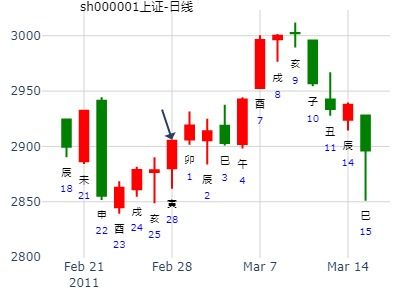
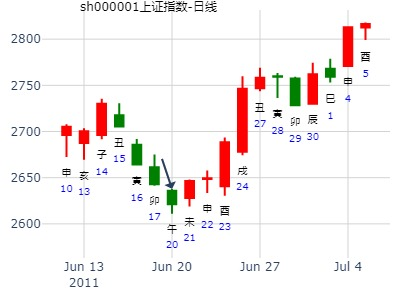
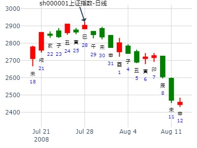
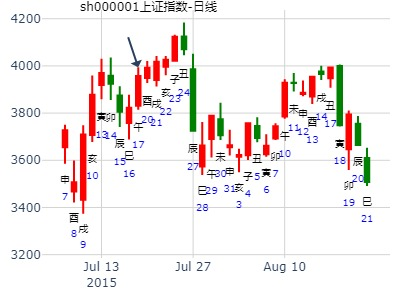
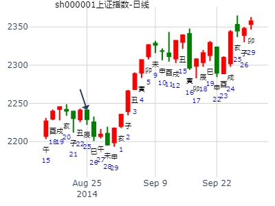

例93、
午月甲申（午未空），担心涨水冲去麦子，占何日晴？得天火同人变泽火革。
子孙戌土′应 动 子孙未土
妻财申金′
兄弟午火′
官鬼亥水′世
子孙丑土″
父母卯木′
友执此卦而问余曰：戌土子孙一爻独发，昨日丙戌，定应大晴，如何还雨？
余曰：尔忧麦被水冲，神以子孙发动克去身边之鬼，示尔勿忧，非应晴也。
虽则目下不晴，决不涨水。
即以此卦而决阴晴，卯日必大晴也。
彼曰：何也？
余曰：动而逢合之日，晴则尔无忧也。
果于卯日大晴。
动爻旬空被冲（只有动爻空，变爻不空,且是化进退的形式。此处不当冲实，而当冲去）
同人之革，占终身功名。子孙化退。短期不退。N年后就冲退。子孙忌神不起作用。（增删卜易）
又如未月丁卯日，占功名终得出仕否？得“同人之革” （摘自《增删卜易》）
干支：未月 丁卯日 (旬空：戌亥)
离宫：天火同人（归魂） 坎宫：泽火革
六神 【本 卦】 【变 卦】
青龙 ▅▅▅▅▅ 子孙戌土 应○→ ▅▅ ▅▅ 子孙未土
玄武 ▅▅▅▅▅ 妻财申金 ▅▅▅▅▅ 妻财酉金
白虎 ▅▅▅▅▅ 兄弟午火 ▅▅▅▅▅ 官鬼亥水 世
螣蛇 ▅▅▅▅▅ 官鬼亥水 世 ▅▅▅▅▅ 官鬼亥水
勾陈 ▅▅ ▅▅ 子孙丑土 ▅▅ ▅▅ 子孙丑土
朱雀 ▅▅▅▅▅ 父母卯木 ▅▅▅▅▅ 父母卯木 应
原注：若断以古法，子孙动而克官，终身不仕，予许辰年得官，何也？
戌土子孙虽动，幸化退神，不克官也，辰年冲去戌土，是以许之。
果选于辰年。岂可谓之动空化日月而不退耶？
这卦问功名，忌神子孙戌土发动，欲克伤世用官鬼亥水致凶，但这戌土看来是有心无力了，因为它自己变出未土，正好属于化退神，有动如无是出师未捷身先败。
当然即使忌神动而变废，按一般的事卦思路，这卦也不见得一定会好，因为世官亥水被月克而显出衰败之兆，世用见衰则功名无望。
但要注意的是，这不是一般的卦，而是一个问事情终身机遇的卦，古筮体系中，判断终身卦与一般的事卦是有所区别的，最重视的不是动变元素，而是持世元素！持世元素在一般的动卦中，
其信息较多应用于细节层面，一般有两方面寓意：其一寓意事态现状，如果不是前者，则可能是寓意事态的最终结局。而终身卦问的就是事主的一生际遇，所以在问终身卦中，原本只应用在细节层面的信息点，质变成为了主导祸福的最关键信息，这与一般事卦原则截然不同的分析重心，造就了全新的时效卦种，我们称之为“终身时效卦”，读者在《讲义》的进阶篇将见到这方面的系统论述。
我们了解终身时效卦的卦象特征后，再审视这卦就会发觉，这卦是官鬼持世，持世的最终信息点，已告诉我们，此主最终会如愿得到功名，所以此人虽历尽磨难，还是在冲走忌神的辰年如愿入仕。
主帖标题: 1月13日上证大盘涨跌
干支：乙未年 己丑月 甲午日 己巳时 （日空：辰巳）
神煞：驿马－申 桃花－卯 日禄－寅 贵人－丑，未
离宫：天火同人 (归魂) 坎宫：泽火革
六神 伏神 本 卦 变 卦
玄武 子孙壬戌土 ▅▅▅▅▅ 应 ○→ 子孙丁未土 ▅▅ ▅▅
白虎 妻财壬申金 ▅▅▅▅▅ 妻财丁酉金 ▅▅▅▅▅
腾蛇 兄弟壬午火 ▅▅▅▅▅ 官鬼丁亥水 ▅▅▅▅▅ 世
勾陈 官鬼己亥水 ▅▅▅▅▅ 世 官鬼己亥水 ▅▅▅▅▅
朱雀 子孙己丑土 ▅▅ ▅▅ 子孙己丑土 ▅▅ ▅▅
青龙 父母己卯木 ▅▅▅▅▅ 父母己卯木 ▅▅▅▅▅ 应
光明地产股3个月走势。同人之革。.md
时间: 2022-01-05 11时28分
干支: 辛丑年辛丑月戊午日 (旬空: 子丑 )
天火同人(归魂) 泽火革
六神 伏神 本 卦 变 卦
朱雀 ▅▅▅▅▅ 子孙戌土 应Ｏ→ ▅▅ ▅▅ 子孙未土
青龙 ▅▅▅▅▅ 妻财申金 ▅▅▅▅▅ 妻财酉金
玄武 ▅▅▅▅▅ 兄弟午火 ▅▅▅▅▅ 官鬼亥水 世
白虎 ▅▅▅▅▅ 官鬼亥水 世 ▅▅▅▅▅ 官鬼亥水
腾蛇 ▅▅ ▅▅ 子孙丑土 ▅▅ ▅▅ 子孙丑土
勾陈 ▅▅▅▅▅ 父母卯木 ▅▅▅▅▅ 父母卯木 应
2022-01-05
主帖标题: 六爻预测28日大盘行情
公历起卦时间：2011年2月28日9时30分 (手工指定)
干支：辛卯年 庚寅月 甲寅日 己巳时 （日空：子丑）
神煞：驿马－申 桃花－卯 日禄－寅 贵人－丑，未
离宫：天火同人 (归魂) 坎宫：泽火革
六神 伏神 本 卦 变 卦
玄武 子孙壬戌土 ▅▅▅▅▅ 应 ○→ 子孙丁未土 ▅▅ ▅▅
白虎 妻财壬申金 ▅▅▅▅▅ 妻财丁酉金 ▅▅▅▅▅
腾蛇 兄弟壬午火 ▅▅▅▅▅ 官鬼丁亥水 ▅▅▅▅▅ 世
勾陈 官鬼己亥水 ▅▅▅▅▅ 世 官鬼己亥水 ▅▅▅▅▅
朱雀 子孙己丑土 ▅▅ ▅▅ 子孙己丑土 ▅▅ ▅▅
青龙 父母己卯木 ▅▅▅▅▅ 父母己卯木 ▅▅▅▅▅ 应
两个卦象有吉利，同人卦：集结之象，火光冲天，人心趋同，迎合大势，革卦：改革之象，题材挖尽，改变策略，换股。子孙化退：持续缩量，可下跌，建议：高抛低吸！个人观点！

出生：安圆圆 占事：002427尤夫股份在本年三四月的走势
公历起卦时间：2015年2月27日16时38分 (手工指定)
干支：乙未年 戊寅月 甲戌日 壬申时 （日空：申酉）
离宫：天火同人 (归魂) 坎宫：泽火革
六神 伏神 本 卦 变 卦
玄武 子孙壬戌土 ▅▅▅▅▅ 应 ○→ 子孙丁未土 ▅▅ ▅▅
白虎 妻财壬申金 ▅▅▅▅▅ 妻财丁酉金 ▅▅▅▅▅
腾蛇 兄弟壬午火 ▅▅▅▅▅ 官鬼丁亥水 ▅▅▅▅▅ 世
勾陈 官鬼己亥水 ▅▅▅▅▅ 世 官鬼己亥水 ▅▅▅▅▅
朱雀 子孙己丑土 ▅▅ ▅▅ 子孙己丑土 ▅▅ ▅▅
青龙 父母己卯木 ▅▅▅▅▅ 父母己卯木 ▅▅▅▅▅ 应
马后炮：值日当旺不退。寅卯日冲实申酉财，反而大涨。
出生：没填 年 性别：男 占事：002027七喜控股下周涨跌
排卦：元亨利贞网六爻在线排盘系统 http://www.china95.net
公历起卦时间：2016年2月26日22时31分 (电脑自动)
干支：丙申年 庚寅月 戊寅日 癸亥时 （日空：申酉）
神煞：驿马－申 桃花－卯 日禄－巳 贵人－丑，未
离宫：天火同人 (归魂) 坎宫：泽火革
朱雀 子孙壬戌土 ▅▅▅▅▅ 应 ○→ 子孙丁未土 ▅▅ ▅▅
青龙 妻财壬申金 ▅▅▅▅▅ 妻财丁酉金 ▅▅▅▅▅
玄武 兄弟壬午火 ▅▅▅▅▅ 官鬼丁亥水 ▅▅▅▅▅ 世
白虎 官鬼己亥水 ▅▅▅▅▅ 世 官鬼己亥水 ▅▅▅▅▅
腾蛇 子孙己丑土 ▅▅ ▅▅ 子孙己丑土 ▅▅ ▅▅
勾陈 父母己卯木 ▅▅▅▅▅ 父母己卯木 ▅▅▅▅▅ 应
同人之革,同人于郊,无悔.子孙值日化退,实际不退.照样涨.(深深房)
昨日深深房000029涨停,研判其后市如何 取得分析式
公历：2002年3月6日
卯月 癸酉日 （旬空：戌亥）
离：天火同人(归魂) 坎：泽火革
六神 【本 卦】 【变 卦】
白虎 ▅▅▅▅▅ 子孙戌土 应○→ ▅▅ ▅▅ 子孙未土
螣蛇 ▅▅▅▅▅ 妻财申金
勾陈 ▅▅▅▅▅ 兄弟午火
朱雀 ▅▅▅▅▅ 官鬼亥水 世
青龙 ▅▅ ▅▅ 子孙丑土
玄武 ▅▅▅▅▅ 父母卯木
分析:
对于多头气氛很浓的股票,于大幅上涨中不一定是多方值月.
戌日涨停.卯戌合,卯日创新高.
马后炮:
最后见顶的也是戌日,19号的戌日,值得研究.是否子孙力量消退.
次日就是戌日,所以子孙很强大.化退但不实退 只有到下一个戌日才行
戌日涨停.卯戌合(论增力可以，论合绊亦可，因为化退，合绊则不退）
跟归妹之雷卦类似，化退之动爻妻财日合不退，大涨。
◇上九:同人于郊，无悔。
象曰：同人于郊，志未得也。
主帖标题: 000702正虹科技
性别：男 占事：000702
起卦方式：摇卦
公历时间：2004年3月2日13时52分
农历时间：甲申年二月十二未时
干支：甲申年 丙寅月 庚辰日 癸未时 (旬空：申酉)
神煞：驿马—寅 桃花—酉 日禄—申 贵人—寅，午
离宫：天火同人（归魂） 坎宫：泽火革
六神 【本 卦】 【变 卦】
螣蛇 ▅▅▅▅▅ 子孙壬戌土 应○→ ▅▅ ▅▅ 子孙丁未土
勾陈 ▅▅▅▅▅ 妻财壬申金 ▅▅▅▅▅ 妻财丁酉金
朱雀 ▅▅▅▅▅ 兄弟壬午火 ▅▅▅▅▅ 官鬼丁亥水 世
青龙 ▅▅▅▅▅ 官鬼己亥水 世 ▅▅▅▅▅ 官鬼己亥水
玄武 ▅▅ ▅▅ 子孙己丑土 ▅▅ ▅▅ 子孙己丑土
白虎 ▅▅▅▅▅ 父母己卯木 ▅▅▅▅▅ 父母己卯木 应
主帖标题: 每周一股：600378天科股份要启动
出生年： 年 性别：男 占事: 周一买入600378有才否
起卦方式：铜钱 周易天地www.64gua.com六爻线上排盘系统
公历时间：2012年3月18日18时15分
干支：壬辰年 癸卯月 戊寅日 辛酉时
旬空：午未 辰巳 申酉 子丑
神煞：驿马─申 桃花─卯 日禄─巳 贵人─丑，未
离宫：天火同人（归魂） 坎宫：泽火革
六神 【本 卦】 【变 卦】
朱雀 ▄▄▄▄▄ 子孙壬戌土 应O-> ▄▄ ▄▄ 子孙丁未土
青龙 ▄▄▄▄▄ 妻财壬申金 ▄▄▄▄▄ 妻财丁酉金
玄武 ▄▄▄▄▄ 兄弟壬午火 ▄▄▄▄▄ 官鬼丁亥水 世
白虎 ▄▄▄▄▄ 官鬼己亥水 世 ▄▄▄▄▄ 官鬼己亥水
螣蛇 ▄▄ ▄▄ 子孙己丑土 ▄▄ ▄▄ 子孙己丑土
勾陈 ▄▄▄▄▄ 父母己卯木 ▄▄▄▄▄ 父母己卯木 应
根据八卦显示，1604已经是本日高点位置了。
日内行情基本无法突破了，但局部的涨跌还是存在。
主题：3月18日黄金的走势1604
癸巳 乙卯 癸未 丙辰 丙申刻 丙午分 戊戌秒(日空:申酉 时空:子丑) 癸巳年二月初七(2013/03/18 08:25:49)
天火同人 泽火革
白虎 子孙戌土 ○ 应 子孙未土 ∥
腾蛇 妻财申金 ／ 妻财酉金 ／
勾陈 兄弟午火 ／ 官鬼亥水 ／ 坎
朱雀 官鬼亥水 ／ 离 官鬼亥水 ／
青龙 子孙丑土 ∥ 子孙丑土 ∥
玄武 父母卯木 ／ 父母卯木 ／ 应
和大家分享。
三种答案：我胜、我败、平局。
出生：2020 年 性别：男 占事：第一次抓阄
排卦：元亨利贞网六爻在线排盘系统 http://www.china95.net
公历起卦时间：2020年3月24日11时8分 (手工指定)
农历：庚子年三月初一日午时
惊蛰：2020年03月05日11时03分
清明：2020年04月04日15时48分
干支：庚子年 己卯月 丙寅日 甲午时 （日空：戌亥）
神煞：驿马－申 桃花－卯 日禄－巳 贵人－酉，亥
离宫：天火同人 (归魂) 坎宫：泽火革
六神 伏神 本 卦 变 卦
青龙 子孙壬戌土 ▅▅▅▅▅ 应 ○→ 子孙丁未土 ▅▅ ▅▅
玄武 妻财壬申金 ▅▅▅▅▅ 妻财丁酉金 ▅▅▅▅▅
白虎 兄弟壬午火 ▅▅▅▅▅ 官鬼丁亥水 ▅▅▅▅▅ 世
螣蛇 官鬼己亥水 ▅▅▅▅▅ 世 官鬼己亥水 ▅▅▅▅▅
勾陈 子孙己丑土 ▅▅ ▅▅ 子孙己丑土 ▅▅ ▅▅
朱雀 父母己卯木 ▅▅▅▅▅ 父母己卯木 ▅▅▅▅▅ 应
应爻戌土月合为合旺。化退。转衰。日月具克未土。
世爻月建半合，日建合之，为合旺。
世爻力量比应爻力量大。
断：我胜。
拆开纸条：实际结果为我败。断卦错误。
应该断：戌土月合为合旺，动克亥水。
出生：2020 年 性别：男 占事：2次抓阄
排卦：元亨利贞网六爻在线排盘系统 http://www.china95.net
公历起卦时间：2020年3月24日11时8分 (手工指定)
农历：庚子年三月初一日午时
惊蛰：2020年03月05日11时03分
清明：2020年04月04日15时48分
干支：庚子年 己卯月 丙寅日 甲午时 （日空：戌亥）
神煞：驿马－申 桃花－卯 日禄－巳 贵人－酉，亥
离宫：火水未济 离宫：天水讼 (游魂)
六神 伏神 本 卦 变 卦
青龙 兄弟己巳火 ▅▅▅▅▅ 应 子孙壬戌土 ▅▅▅▅▅
玄武 子孙己未土 ▅▅ ▅▅ ╳→ 妻财壬申金 ▅▅▅▅▅
白虎 妻财己酉金 ▅▅▅▅▅ 兄弟壬午火 ▅▅▅▅▅ 世
螣蛇 官鬼己亥水 兄弟戊午火 ▅▅ ▅▅ 世 兄弟戊午火 ▅▅ ▅▅
勾陈 子孙戊辰土 ▅▅▅▅▅ 子孙戊辰土 ▅▅▅▅▅
朱雀 父母戊寅木 ▅▅ ▅▅ 父母戊寅木 ▅▅ ▅▅ 应
1，子孙未土月日克，休囚。无用。无力泄财。
2，寅日刑巳火应爻。
3，月日生世爻。世爻力量大些。
断：我胜
实际结果：平局。
首先排除了子孙未土动的因素，。
应该断日月都生巳午火。平局。
出生：2020 年 性别：男 占事：3
排卦：元亨利贞网六爻在线排盘系统 http://www.china95.net
公历起卦时间：2020年3月24日11时8分 (手工指定)
农历：庚子年三月初一日午时
惊蛰：2020年03月05日11时03分
清明：2020年04月04日15时48分
干支：庚子年 己卯月 丙寅日 甲午时 （日空：戌亥）
神煞：驿马－申 桃花－卯 日禄－巳 贵人－酉，亥
坤宫：地雷复 (六合) 坤宫：坤为地 (六冲)
六神 伏神 本 卦 变 卦
青龙 子孙癸酉金 ▅▅ ▅▅ 子孙癸酉金 ▅▅ ▅▅ 世
玄武 妻财癸亥水 ▅▅ ▅▅ 妻财癸亥水 ▅▅ ▅▅
白虎 兄弟癸丑土 ▅▅ ▅▅ 应 兄弟癸丑土 ▅▅ ▅▅
螣蛇 兄弟庚辰土 ▅▅ ▅▅ 官鬼乙卯木 ▅▅ ▅▅ 应
勾陈 父母乙巳火 官鬼庚寅木 ▅▅ ▅▅ 父母乙巳火 ▅▅ ▅▅
朱雀 妻财庚子水 ▅▅▅▅▅ 世 ○→ 兄弟乙未土 ▅▅ ▅▅
世应在月日都是休囚。世爻回头克，现在又是午时，生应爻丑，未土回头克。所以世弱，应强。
现在为午时：断我败。
实际为：我败。正确。
出生：2020 年 性别：男 占事：4
排卦：元亨利贞网六爻在线排盘系统 http://www.china95.net
公历起卦时间：2020年3月24日11时8分 (手工指定)
农历：庚子年三月初一日午时
惊蛰：2020年03月05日11时03分
清明：2020年04月04日15时48分
干支：庚子年 己卯月 丙寅日 甲午时 （日空：戌亥）
神煞：驿马－申 桃花－卯 日禄－巳 贵人－酉，亥
坤宫：水地比 (归魂) 坤宫：坤为地 (六冲)
六神 伏神 本 卦 变 卦
青龙 妻财戊子水 ▅▅ ▅▅ 应 子孙癸酉金 ▅▅ ▅▅ 世
玄武 兄弟戊戌土 ▅▅▅▅▅ ○→ 妻财癸亥水 ▅▅ ▅▅
白虎 子孙戊申金 ▅▅ ▅▅ 兄弟癸丑土 ▅▅ ▅▅
螣蛇 官鬼乙卯木 ▅▅ ▅▅ 世 官鬼乙卯木 ▅▅ ▅▅ 应
勾陈 父母乙巳火 ▅▅ ▅▅ 父母乙巳火 ▅▅ ▅▅
朱雀 兄弟乙未土 ▅▅ ▅▅ 兄弟乙未土 ▅▅ ▅▅
卦非常明显断：我胜
实际为：我胜，正确
出生：2020 年 性别：男 占事：5
排卦：元亨利贞网六爻在线排盘系统 http://www.china95.net
公历起卦时间：2020年3月24日11时8分 (手工指定)
农历：庚子年三月初一日午时
惊蛰：2020年03月05日11时03分
清明：2020年04月04日15时48分
干支：庚子年 己卯月 丙寅日 甲午时 （日空：戌亥）
神煞：驿马－申 桃花－卯 日禄－巳 贵人－酉，亥
艮宫：艮为山 (六冲) 离宫：火山旅
六神 伏神 本 卦 变 卦
青龙 官鬼丙寅木 ▅▅▅▅▅ 世 父母己巳火 ▅▅▅▅▅
玄武 妻财丙子水 ▅▅ ▅▅ 兄弟己未土 ▅▅ ▅▅
白虎 兄弟丙戌土 ▅▅ ▅▅ ╳→ 子孙己酉金 ▅▅▅▅▅ 应
螣蛇 子孙丙申金 ▅▅▅▅▅ 应 子孙丙申金 ▅▅▅▅▅
勾陈 父母丙午火 ▅▅ ▅▅ 父母丙午火 ▅▅ ▅▅
朱雀 兄弟丙辰土 ▅▅ ▅▅ 兄弟丙辰土 ▅▅ ▅▅ 世
断：我胜，寅木临日月。
应爻休囚。
实际为我胜。断卦正确。
出生：2020 年 性别：男 占事：6
排卦：元亨利贞网六爻在线排盘系统 http://www.china95.net
公历起卦时间：2020年3月24日11时8分 (手工指定)
农历：庚子年三月初一日午时
惊蛰：2020年03月05日11时03分
清明：2020年04月04日15时48分
干支：庚子年 己卯月 丙寅日 甲午时 （日空：戌亥）
神煞：驿马－申 桃花－卯 日禄－巳 贵人－酉，亥
震宫：泽风大过 (游魂) 震宫：雷风恒
六神 伏神 本 卦 变 卦
青龙 妻财丁未土 ▅▅ ▅▅ 妻财庚戌土 ▅▅ ▅▅ 应
玄武 官鬼丁酉金 ▅▅▅▅▅ ○→ 官鬼庚申金 ▅▅ ▅▅
白虎 子孙庚午火 父母丁亥水 ▅▅▅▅▅ 世 子孙庚午火 ▅▅▅▅▅
螣蛇 官鬼辛酉金 ▅▅▅▅▅ 官鬼辛酉金 ▅▅▅▅▅ 世
勾陈 兄弟庚寅木 父母辛亥水 ▅▅▅▅▅ 父母辛亥水 ▅▅▅▅▅
朱雀 妻财辛丑土 ▅▅ ▅▅ 应 妻财辛丑土 ▅▅ ▅▅
世爻亥水，日建合之，合旺。
应爻丑土日建克之，但时辰午时生丑，午时亥水为休。
断：我败
实际为我胜。断卦错误。
原因，应该考虑日建左右的力量比时辰左右的力量大！
亥水得日合，卦中元神化进泄应爻生财爻。所以世爻力量大！
出生：2020 年 性别：男 占事：7
排卦：元亨利贞网六爻在线排盘系统 http://www.china95.net
公历起卦时间：2020年3月24日11时8分 (手工指定)
农历：庚子年三月初一日午时
惊蛰：2020年03月05日11时03分
清明：2020年04月04日15时48分
干支：庚子年 己卯月 丙寅日 甲午时 （日空：戌亥）
神煞：驿马－申 桃花－卯 日禄－巳 贵人－酉，亥
乾宫：风地观 巽宫：风雷益
六神 伏神 本 卦 变 卦
青龙 妻财辛卯木 ▅▅▅▅▅ 妻财辛卯木 ▅▅▅▅▅ 应
玄武 兄弟壬申金 官鬼辛巳火 ▅▅▅▅▅ 官鬼辛巳火 ▅▅▅▅▅
白虎 父母辛未土 ▅▅ ▅▅ 世 父母辛未土 ▅▅ ▅▅
螣蛇 妻财乙卯木 ▅▅ ▅▅ 父母庚辰土 ▅▅ ▅▅ 世
勾陈 官鬼乙巳火 ▅▅ ▅▅ 妻财庚寅木 ▅▅ ▅▅
朱雀 子孙甲子水 父母乙未土 ▅▅ ▅▅ 应 ╳→ 子孙庚子水 ▅▅▅▅▅
断平局
实际是我败
原因分析：动爻比静爻力量爻大一些，
主帖标题: 国证2000 3.12
辛丑 辛卯 丁巳 戊申 (子丑空) 辛丑年正月廿七(2021/03/10 15:34:49)
天火同人 泽火革
青龙 子孙戌土 ○ 应 子孙未土 ∥
玄武 妻财壬申 ／ 妻财酉金 ／
白虎 兄弟午火 ／ 官鬼丁亥 ／ 世
腾蛇 官鬼亥水 ／ 世 官鬼亥水 ／
勾陈 子孙丑土 ∥ 子孙丑土 ∥
朱雀 父母卯木 ／ 父母卯木 ／ 应
冲高回落,小阳小阴
主帖标题: 手摇银行板块 周卦 3.28-4.1
公历：2022年3月27日16时9分，星期日。
干支：壬寅年 癸卯月 己卯日 壬申时 (卦身：申)
主变卦 天火同人(离宫-归魂) 之 泽火革(坎宫) [空亡:申、酉]
勾陈 ▅▅▅▅▅○子孙壬戌土 应 ▅▅ ▅▅ 子孙丁未土
朱雀 ▅▅▅▅▅ 妻财壬申金 ▅▅▅▅▅ 妻财丁酉金
青龙 ▅▅▅▅▅ 兄弟壬午火 ▅▅▅▅▅ 官鬼丁亥水 世
玄武 ▅▅▅▅▅ 官鬼己亥水 世 ▅▅▅▅▅ 官鬼己亥水
白虎 ▅▅ ▅▅ 子孙己丑土 ▅▅ ▅▅ 子孙己丑土
螣蛇 ▅▅▅▅▅ 父母己卯木 ▅▅▅▅▅ 父母己卯木 应
安圆圆 占事：手上的东软集团从明天到下周五的走势
公历起卦时间：2015年4月8日21时21分 (手工指定)
干支：乙未年 庚辰月 甲寅日 乙亥时 （日空：子丑）
离宫：天火同人 (归魂) 坎宫：泽火革
六神 伏神 本 卦 变 卦
玄武 子孙壬戌土 ▅▅▅▅▅ 应 ○→ 子孙丁未土 ▅▅ ▅▅
白虎 妻财壬申金 ▅▅▅▅▅ 妻财丁酉金 ▅▅▅▅▅
腾蛇 兄弟壬午火 ▅▅▅▅▅ 官鬼丁亥水 ▅▅▅▅▅ 世
勾陈 官鬼己亥水 ▅▅▅▅▅ 世 官鬼己亥水 ▅▅▅▅▅
朱雀 子孙己丑土 ▅▅ ▅▅ 子孙己丑土 ▅▅ ▅▅
青龙 父母己卯木 ▅▅▅▅▅ 父母己卯木 ▅▅▅▅▅ 应
戌月破日克，化退。只在辰未日涨。申酉值日反而跌。
参考：
同人之革，同人于郊，无悔。大涨。子孙值月化退化空照样涨。短期不退。
主帖标题: 上证大盘测试局21......
replyreload += ',' + 10780385;公历：2016年04月06日09时06分 星期三
节气：清明：04月04日16时27分 谷雨：04月19日23时29分
真时：2016年04月06日09时06分 北京 天安门(东经116.38度)
农历：丙申年 二月小 廿九日 隅中时分 巳时
干支：丙申 壬辰 戊午 丁巳 报数起局阳一局
旬空：辰巳 午未 子丑 子丑 旬首：甲寅
值符天心在七宫 值使开门在九宫 超级奇门排宫法
┌─────────┬─────────┬─────────┐
│己 玄武 │丁 九地 │乙 九天 │
│ 天英 乙 │ 天芮 己 禽壬│ 天柱 丁 │
│ 惊门 辛 │ 开门 乙 │ 休门 己 禽壬│
│白虎 │玄武 │九地 │
├─────────┼─────────┼─────────┤
│戊 白虎 │庚 │壬 值符 │
│ 天辅 辛 │ │ 天心 癸 │
│ 死门 庚 │ 壬│ 生门 丁 │
│六合 │ │九天 │
├─────────┼─────────┼─────────┤
│癸 六合○ │丙 太阴○ │辛 螣蛇 马│
│ 天冲 庚 │ 天任 丙 │ 天蓬 戊 │
│ 景门 丙 │ 杜门 戊 │ 伤门 癸 │
│太阴 │螣蛇 │值符 │
└─────────┴─────────┴─────────┘
干支：丙申年 壬辰月 戊午日 丁巳时 （日空：子丑）神煞：驿马－申 桃花－卯 日禄－巳 贵人－丑，未
离宫：天火同人 (归魂) 坎宫：泽火革
六神 伏神 本 卦 变 卦
朱雀 子孙壬戌土 ▅▅▅▅▅ 应 ○→ 子孙丁未土 ▅▅ ▅▅
青龙 妻财壬申金 ▅▅▅▅▅ 妻财丁酉金 ▅▅▅▅▅
玄武 兄弟壬午火 ▅▅▅▅▅ 官鬼丁亥水 ▅▅▅▅▅ 世
白虎 官鬼己亥水 ▅▅▅▅▅ 世 官鬼己亥水 ▅▅▅▅▅
腾蛇 子孙己丑土 ▅▅ ▅▅ 子孙己丑土 ▅▅ ▅▅
勾陈 父母己卯木 ▅▅▅▅▅ 父母己卯木 ▅▅▅▅▅ 应
王阳明子，如果您要查看本帖隐藏内容请回复预测仅供参考、操作自负。
锌业股份五天内如何？
时间: 2016-04-13 21时8分
干支: 丙申年壬辰月乙丑日 (旬空: 戌亥 )
天火同人(归魂) 泽火革
六神 伏神 本 卦 变 卦
玄武 ▅▅▅▅▅ 子孙戌土 应Ｏ→ ▅▅ ▅▅ 子孙未土
白虎 ▅▅▅▅▅ 妻财申金 ▅▅▅▅▅ 妻财酉金
腾蛇 ▅▅▅▅▅ 兄弟午火 ▅▅▅▅▅ 官鬼亥水 世
勾陈 ▅▅▅▅▅ 官鬼亥水 世 ▅▅▅▅▅ 官鬼亥水
朱雀 ▅▅ ▅▅ 子孙丑土 ▅▅ ▅▅ 子孙丑土
青龙 ▅▅▅▅▅ 父母卯木 ▅▅▅▅▅ 父母卯木 应
主帖标题: 4月9日大盘？
辰月 丁亥日 癸卯时
旬 空：辰巳 午未 午未 辰巳
神 煞：驿马─巳 桃花─子 日禄─午 贵人─酉，亥
中国预测网纳甲六爻排盘
离宫：天火同人（归魂） 坎宫：泽火革
六神 【本 卦】 【变 卦】
青龙 ▄▄▄▄▄ 子孙壬戌土 应○ ▄▄ ▄▄ 子孙丁未土
玄武 ▄▄▄▄▄ 妻财壬申金 ▄▄▄▄▄ 妻财丁酉金
白虎 ▄▄▄▄▄ 兄弟壬午火 ▄▄▄▄▄ 官鬼丁亥水 世
螣蛇 ▄▄▄▄▄ 官鬼己亥水 世 ▄▄▄▄▄ 官鬼己亥水
勾陈 ▄▄ ▄▄ 子孙己丑土 ▄▄ ▄▄ 子孙己丑土
朱雀 ▄▄▄▄▄ 父母己卯木 ▄▄▄▄▄ 父母己卯木 应

作者：重金属 同人之革，子化退戌化未，兄弟值月，子化退跌。.md
公历起卦时间：2008年5月11日16时48分 (手工指定)
干支：戊子年 丁巳月 辛亥日 丙申时 （日空：寅卯）
神煞：驿马－巳 桃花－子 日禄－酉 贵人－寅，午
离宫：天火同人 (归魂) 坎宫：泽火革
六神 伏神 本 卦 变 卦
腾蛇 子孙壬戌土 ▅▅▅▅▅ 应 ○→ 子孙丁未土 ▅▅ ▅▅
勾陈 妻财壬申金 ▅▅▅▅▅ 妻财丁酉金 ▅▅▅▅▅
朱雀 兄弟壬午火 ▅▅▅▅▅ 官鬼丁亥水 ▅▅▅▅▅ 世
青龙 官鬼己亥水 ▅▅▅▅▅ 世 官鬼己亥水 ▅▅▅▅▅
玄武 子孙己丑土 ▅▅ ▅▅ 子孙己丑土 ▅▅ ▅▅
白虎 父母己卯木 ▅▅▅▅▅ 父母己卯木 ▅▅▅▅▅ 应
大多数同人之革是涨，且大多是在土月，哪怕是辰月（也助土）。
但在午月，这卦却是跌的。
但因午月好歹是助土的，所以跌也慢。不是暴跌那种。
主帖标题: 预测财运专帖
出生年：1985年 性别：女
占事: 测6/22至7/22财运起卦
方式：手动摇卦 周易天地www.64gua.com六爻线上排盘系统
公历时间：2007年6月21日22时29分
干支：丁亥年 丙午月 丙戌日 己亥时 旬空：午未 寅卯 午未 辰巳
神煞：驿马─申 桃花─卯 日禄─巳 贵人─酉，亥
离宫：天火同人（归魂） 坎宫：泽火革
青龙 ▄▄▄▄▄ 子孙壬戌土 应O-> ▄▄ ▄▄ 子孙丁未土
玄武 ▄▄▄▄▄ 妻财壬申金 ▄▄▄▄▄ 妻财丁酉金
白虎 ▄▄▄▄▄ 兄弟壬午火 ▄▄▄▄▄ 官鬼丁亥水 世
螣蛇 ▄▄▄▄▄ 官鬼己亥水 世 ▄▄▄▄▄ 官鬼己亥水
勾陈 ▄▄ ▄▄ 子孙己丑土 ▄▄ ▄▄ 子孙己丑土
朱雀 ▄▄▄▄▄ 父母己卯木 ▄▄▄▄▄ 父母己卯木 应
主帖标题: 6.21上证大盘
出生年：年 性别：女 占事: 6.21
起卦方式：手动摇卦 周易天地www.64gua.com六爻线上排盘系统
公历时间：2011年6月20日22时44分 农历时间：辛卯年 五月十九日亥时
干支：辛卯年 甲午月 丙午日 己亥时
旬空：午未 辰巳 寅卯 辰巳
神煞：驿马─申 桃花─卯 日禄─巳 贵人─酉，亥
离宫：天火同人（归魂） 坎宫：泽火革
六神 【本 卦】 【变 卦】
青龙 ▄▄▄▄▄ 子孙壬戌土 应O-> ▄▄ ▄▄ 子孙丁未土
玄武 ▄▄▄▄▄ 妻财壬申金 ▄▄▄▄▄ 妻财丁酉金
白虎 ▄▄▄▄▄ 兄弟壬午火 ▄▄▄▄▄ 官鬼丁亥水 世
螣蛇 ▄▄▄▄▄ 官鬼己亥水 世 ▄▄▄▄▄ 官鬼己亥水
勾陈 ▄▄ ▄▄ 子孙己丑土 ▄▄ ▄▄ 子孙己丑土
朱雀 ▄▄▄▄▄ 父母己卯木 ▄▄▄▄▄ 父母己卯木 应

主帖标题: 6月26日沪市大盘
干支：乙未年 壬午月 癸酉日 丁巳时 （日空：戌亥）
神煞：驿马－亥 桃花－午 日禄－子 贵人－卯，巳
离宫：天火同人 (归魂) 坎宫：泽火革
六神 伏神 本 卦 变 卦
玄武 子孙壬戌土 ▅▅▅▅▅ 应 ○→ 子孙丁未土 ▅▅ ▅▅
白虎 妻财壬申金 ▅▅▅▅▅ 妻财丁酉金 ▅▅▅▅▅
腾蛇 兄弟壬午火 ▅▅▅▅▅ 官鬼丁亥水 ▅▅▅▅▅ 世
勾陈 官鬼己亥水 ▅▅▅▅▅ 世 官鬼己亥水 ▅▅▅▅▅
朱雀 子孙己丑土 ▅▅ ▅▅ 子孙己丑土 ▅▅ ▅▅
青龙 父母己卯木 ▅▅▅▅▅ 父母己卯木 ▅▅▅▅▅ 应
~实暴跌335点，7.4%
2022年6月2日7时26分 64gua：远方
干支：壬寅年 乙巳月 丙戌日 壬辰时 （日空：午未）
神煞：驿马－申 桃花－卯 日禄－巳 贵人－酉，亥
离宫：天火同人 (归魂) 坎宫：泽火革
六神 伏神 本 卦
变 卦
青龙 子孙戌土 ▅▅▅▅▅ 应 ○→ 子孙未土 ▅▅ ▅▅
玄武 妻财申金 ▅▅▅▅▅ 妻财酉金 ▅▅▅▅▅
白虎 兄弟午火 ▅▅▅▅▅ 官鬼亥水 ▅▅▅▅▅ 世
螣蛇 官鬼亥水 ▅▅▅▅▅ 世 官鬼亥水 ▅▅▅▅▅
勾陈 子孙丑土 ▅▅ ▅▅ 子孙丑土 ▅▅ ▅▅
朱雀 父母卯木 ▅▅▅▅▅ 父母卯木 ▅▅▅▅▅ 应
公历起卦时间：2022年6月2日8时5分 (电脑自动) 马生南阳
干支：壬寅年 乙巳月 丙戌日 壬辰时 （日空：午未）
震宫：泽风大过 (游魂) 坤宫：泽天夬
六神 伏神 本 卦 变 卦
青龙 妻财丁未土 ▅▅ ▅▅ 妻财丁未土 ▅▅ ▅▅
玄武 官鬼丁酉金 ▅▅▅▅▅ 官鬼丁酉金 ▅▅▅▅▅ 世
白虎 子孙庚午火 父母丁亥水 ▅▅▅▅▅ 世 父母丁亥水 ▅▅▅▅▅
螣蛇 官鬼辛酉金 ▅▅▅▅▅ 妻财甲辰土 ▅▅▅▅▅
勾陈 兄弟庚寅木 父母辛亥水 ▅▅▅▅▅ 兄弟甲寅木 ▅▅▅▅▅ 应
朱雀 妻财辛丑土 ▅▅ ▅▅ 应 ╳→ 父母甲子水 ▅▅▅▅▅
初六：藉用白茅，无咎。象曰：藉用白茅，柔在下也。bk
主帖标题: 7月3日占问：大盘调整基本到位了吗？？？
出生年：年 性别：男 占事: 888起卦方式：手动摇卦 周易天地www.64gua.com六爻线上排盘系统 公历时间：2007年7月3日12时2分
干支：丁亥年 丙午月 戊戌日 戊午时 旬空：午未 寅卯 辰巳 子丑
神煞：驿马─申 桃花─卯 日禄─巳 贵人─丑，未
离宫：天火同人（归魂） 坎宫：泽火革 六神 【本 卦】 【变 卦】
朱雀 ▄▄▄▄▄ 子孙壬戌土 应O-> ▄▄ ▄▄ 子孙丁未土
青龙 ▄▄▄▄▄ 妻财壬申金 ▄▄▄▄▄ 妻财丁酉金
玄武 ▄▄▄▄▄ 兄弟壬午火 ▄▄▄▄▄ 官鬼丁亥水 世
白虎 ▄▄▄▄▄ 官鬼己亥水 世 ▄▄▄▄▄ 官鬼己亥水
螣蛇 ▄▄ ▄▄ 子孙己丑土 ▄▄ ▄▄ 子孙己丑土
勾陈 ▄▄▄▄▄ 父母己卯木 ▄▄▄▄▄ 父母己卯木 应

主帖标题: 下周大盘形势如何?(7.16-7.20)
2007年 7月 12日 20时 34分 (起卦方式：手动指定)
干支：丁亥年 丁未月 丁未日 庚戌时 日空亡：寅卯
神煞：驿马－巳 桃花－子 日禄－午 贵人－酉，亥
离宫：天火同人 (归魂) 坎宫：泽火革
六神 伏神 本 卦 变 卦
青龙 子孙戌土 ▅▅▅▅▅ 应 ○→ 子孙未土 ▅▅ ▅▅
玄武 妻财申金 ▅▅▅▅▅ 妻财酉金 ▅▅▅▅▅
白虎 兄弟午火 ▅▅▅▅▅ 官鬼亥水 ▅▅▅▅▅ 世
螣蛇 官鬼亥水 ▅▅▅▅▅ 世 官鬼亥水 ▅▅▅▅▅
勾陈 子孙丑土 ▅▅ ▅▅ 子孙丑土 ▅▅ ▅▅
朱雀 父母卯木 ▅▅▅▅▅ 父母卯木 ▅▅▅▅▅ 应
主帖标题: 7月28日上证指数升跌？
干支：戊子年 己未月 己巳日 己巳时 旬空：午未 子丑 戌亥 戌亥 神煞：驿马─亥 桃花─午 日禄─午 贵人─子，申 离宫：天火同人（归魂）
坎宫：泽火革 六神 【本 卦】 【变 卦】
勾陈 ▄▄▄▄▄ 子孙壬戌土 应O-> ▄▄ ▄▄ 子孙丁未土
朱雀 ▄▄▄▄▄ 妻财壬申金 ▄▄▄▄▄ 妻财丁酉金
青龙 ▄▄▄▄▄ 兄弟壬午火 ▄▄▄▄▄ 官鬼丁亥水 世
玄武 ▄▄▄▄▄ 官鬼己亥水 世 ▄▄▄▄▄ 官鬼己亥水
白虎 ▄▄ ▄▄ 子孙己丑土 ▄▄ ▄▄ 子孙己丑土
螣蛇 ▄▄▄▄▄ 父母己卯木 ▄▄▄▄▄ 父母己卯木 应
孙反冲孙，断涨。

占事：7月20日-7月24日股指1508的走势 方式：手工指定
公历：2015年7月17日14时31分 星期五 北京时间
干支：乙未年 癸未月 甲午日 辛未时
旬空：辰巳 申酉 辰巳 戌亥
神煞：驿马－申 桃花－卯 禄神－寅 贵人－丑，未
离：天火同人(归魂) 坎：泽火革
六神 【本 卦】 【变 卦】
玄武 ▅▅▅▅▅ 子孙壬戌土 应○→ ▅▅ ▅▅ 子孙丁未土
白虎 ▅▅▅▅▅ 妻财壬申金 ▅▅▅▅▅ 妻财丁酉金
螣蛇 ▅▅▅▅▅ 兄弟壬午火 ▅▅▅▅▅ 官鬼丁亥水 世
勾陈 ▅▅▅▅▅ 官鬼己亥水 世 ▅▅▅▅▅ 官鬼己亥水
朱雀 ▅▅ ▅▅ 子孙己丑土 ▅▅ ▅▅ 子孙己丑土
青龙 ▅▅▅▅▅ 父母己卯木 ▅▅▅▅▅ 父母己卯木 应

主帖标题: 8月25-29日大盘趋势
出生年：年 性别：女 占事: 下周大盘趋势 辰巳午未申
起卦方式：手动摇卦 周易天地六爻线上排盘系统
公历时间：2014年8月22日13时44分 农历时间：甲午年 七月二十七日未时
干支：甲午年 壬申月 乙丑日 癸未时
旬空：辰巳 戌亥 戌亥 申酉
神煞：驿马─亥 桃花─午 日禄─卯 贵人─子，申
离宫：天火同人（归魂） 坎宫：泽火革
六神 【本 卦】 【变 卦】
玄武 ▄▄▄▄▄ 子孙壬戌土 应O-> ▄▄ ▄▄ 子孙丁未土
白虎 ▄▄▄▄▄ 妻财壬申金 ▄▄▄▄▄ 妻财丁酉金
螣蛇 ▄▄▄▄▄ 兄弟壬午火 ▄▄▄▄▄ 官鬼丁亥水 世
勾陈 ▄▄▄▄▄ 官鬼己亥水 世 ▄▄▄▄▄ 官鬼己亥水
朱雀 ▄▄ ▄▄ 子孙己丑土 ▄▄ ▄▄ 子孙己丑土
青龙 ▄▄▄▄▄ 父母己卯木 ▄▄▄▄▄ 父母己卯木 应

当前上升中，处暑节中下落结束上涨进入回调期，应该是癸巳日开始回调吧，下周二
主帖标题: 8月25号至29号走势大盘
占事: 8月25号至29号走势
起卦方式：手工指定
公历时间：2014年8月25日9时18分
干支：甲午年 壬申月 戊辰日 丁巳时
旬空：辰巳 戌亥 戌亥 子丑
离宫：天火同人（归魂） 坎宫：泽火革
六神 【本 卦】 【变 卦】
朱雀 ▄▄▄▄▄ 子孙壬戌土 应O-> ▄▄ ▄▄ 子孙丁未土
青龙 ▄▄▄▄▄ 妻财壬申金 ▄▄▄▄▄ 妻财丁酉金
玄武 ▄▄▄▄▄ 兄弟壬午火 ▄▄▄▄▄ 官鬼丁亥水 世
白虎 ▄▄▄▄▄ 官鬼己亥水 世 ▄▄▄▄▄ 官鬼己亥水
螣蛇 ▄▄ ▄▄ 子孙己丑土 ▄▄ ▄▄ 子孙己丑土
勾陈 ▄▄▄▄▄ 父母己卯木 ▄▄▄▄▄ 父母己卯木 应
周一小幅上涨，
周二大跌，
周三也跌，
周四加稳上涨，
周五上涨。
[/post]
占事: 8月25号至29号走势
公历时间：2014年8月25日9时18分
干支：甲午年 壬申月 戊辰日 丁巳时
旬空：辰巳 戌亥 戌亥 子丑
离宫：天火同人（归魂） 坎宫：泽火革
六神 【本 卦】 【变 卦】
朱雀 ▄▄▄▄▄ 子孙壬戌土 应O-> ▄▄ ▄▄ 子孙丁未土
青龙 ▄▄▄▄▄ 妻财壬申金 ▄▄▄▄▄ 妻财丁酉金
玄武 ▄▄▄▄▄ 兄弟壬午火 ▄▄▄▄▄ 官鬼丁亥水 世
白虎 ▄▄▄▄▄ 官鬼己亥水 世 ▄▄▄▄▄ 官鬼己亥水
螣蛇 ▄▄ ▄▄ 子孙己丑土 ▄▄ ▄▄ 子孙己丑土
勾陈 ▄▄▄▄▄ 父母己卯木 ▄▄▄▄▄ 父母己卯木 应
此处动爻旬空被冲（不当冲实，而当冲走），所以当天就跌。
29日申日财现则转折。
主帖标题: 2011年10月大盘涨跌卦
占事：2011年10月大盘涨跌？
公历起卦时间：2011年9月30日16时55分 (手工指定)
干支：辛卯年 丁酉月 戊子日 庚申时 （日空：午未）
神煞：驿马－寅 桃花－酉 日禄－巳 贵人－丑，未
离宫：天火同人 (归魂) 坎宫：泽火革
六神 伏神 本 卦 变 卦
朱雀 子孙壬戌土 ▅▅▅▅▅ 应 ○→ 子孙丁未土 ▅▅ ▅▅
青龙 妻财壬申金 ▅▅▅▅▅ 妻财丁酉金 ▅▅▅▅▅
玄武 兄弟壬午火 ▅▅▅▅▅ 官鬼丁亥水 ▅▅▅▅▅ 世
白虎 官鬼己亥水 ▅▅▅▅▅ 世 官鬼己亥水 ▅▅▅▅▅
腾蛇 子孙己丑土 ▅▅ ▅▅ 子孙己丑土 ▅▅ ▅▅
勾陈 父母己卯木 ▅▅▅▅▅ 父母己卯木 ▅▅▅▅▅ 应
主题：9月25日黄金日K的走势
己亥 癸酉 乙丑 庚辰 丙戌刻 戊午分 壬子秒(戌亥空) 己亥年八月廿七(2019/09/25 08:48:04)
天火同人 泽火革
玄武 子孙戌土 ○ 应 子孙未土 ∥
白虎 妻财申金 ／ 妻财酉金 ／
腾蛇 兄弟午火 ／ 官鬼亥水 ／ 坎
勾陈 官鬼亥水 ／ 离 官鬼亥水 ／
朱雀 子孙丑土 ∥ 子孙丑土 ∥
青龙 父母卯木 ／ 父母卯木 ／ 应
主帖标题: 9.15——涨势不变
起卦公历：2022年9月14日15时45分(北京时间)
起卦农历：二○二二年 八月 十九日 申时。
干支： 壬寅年 己酉月 庚午日 甲申时 (卦身：丑)未
主变卦 天火同人(离宫-归魂) 之 泽火革(坎宫) [空亡:戌、亥]
螣蛇 ━━━○子孙壬戌土 应 ━ ━ 子孙丁未土
勾陈 ━━━ 妻财壬申金 ━━━ 妻财丁酉金
朱雀 ━━━ 兄弟壬午火 ━━━ 官鬼丁亥水 世
青龙 ━━━ 官鬼己亥水 世 ━━━ 官鬼己亥水
玄武 ━ ━ 子孙己丑土 ━ ━ 子孙己丑土
白虎 ━━━ 父母己卯木 ━━━ 父母己卯木 应
◇上九:同人于郊，无悔。 象曰：同人于郊，志未得也。
上涨中等一等，不会后悔。
主帖标题: 10月26-31日大盘涨跌卦
占事：10月26-31日大盘涨跌？
公历起卦时间：2014年10月24日15时11分 (手工指定)
干支：甲午年 甲戌月 戊辰日 庚申时 （日空：戌亥）
离宫：天火同人 (归魂) 坎宫：泽火革
朱雀 子孙壬戌土 ▅▅▅▅▅ 应 ○→ 子孙丁未土 ▅▅ ▅▅
青龙 妻财壬申金 ▅▅▅▅▅ 妻财丁酉金 ▅▅▅▅▅
玄武 兄弟壬午火 ▅▅▅▅▅ 官鬼丁亥水 ▅▅▅▅▅ 世
白虎 官鬼己亥水 ▅▅▅▅▅ 世 官鬼己亥水 ▅▅▅▅▅
腾蛇 子孙己丑土 ▅▅ ▅▅ 子孙己丑土 ▅▅ ▅▅
勾陈 父母己卯木 ▅▅▅▅▅ 父母己卯木 ▅▅▅▅▅ 应
同人之革，子化退戌化未。测10月第4周10月26-31日大盘。.md
时间: 2014-10-24 15时11分
干支: 甲午年甲戌月戊辰日 (旬空: 戌亥 )
天火同人(归魂) 泽火革
六神 伏神 本 卦 变 卦
朱雀 ▅▅▅▅▅ 子孙戌土 应Ｏ→ ▅▅ ▅▅ 子孙未土
青龙 ▅▅▅▅▅ 妻财申金 ▅▅▅▅▅ 妻财酉金
玄武 ▅▅▅▅▅ 兄弟午火 ▅▅▅▅▅ 官鬼亥水 世
白虎 ▅▅▅▅▅ 官鬼亥水 世 ▅▅▅▅▅ 官鬼亥水
腾蛇 ▅▅ ▅▅ 子孙丑土 ▅▅ ▅▅ 子孙丑土
勾陈 ▅▅▅▅▅ 父母卯木 ▅▅▅▅▅ 父母卯木 应

退神，旺而不退。
值辰时冲戌实（横盘，没冲走反而冲实）
申酉财爻值，涨。
戌日值动爻，涨。
主帖标题: 擂台赛：上证指数下周一趋势如何？奖励100个金币
占事: 下周一趋势如
公历时间：2010年11月27日2 农历时间：庚寅年 十月二十二日
干支：庚寅年 丁亥月 辛巳日
旬空：午未 午未 申酉
离宫：天火同人（归魂） 坎宫：泽火革
六神 【本 卦】 【变 卦】
螣蛇 ▄▄▄▄▄ 子孙壬戌土 应O-> ▄▄ ▄▄ 子孙丁未土
勾陈 ▄▄▄▄▄ 妻财壬申金 ▄▄▄▄▄ 妻财丁酉金
朱雀 ▄▄▄▄▄ 兄弟壬午火 ▄▄▄▄▄ 官鬼丁亥水 世
青龙 ▄▄▄▄▄ 官鬼己亥水 世 ▄▄▄▄▄ 官鬼己亥水
玄武 ▄▄ ▄▄ 子孙己丑土 ▄▄ ▄▄ 子孙己丑土
白虎 ▄▄▄▄▄ 父母己卯木 ▄▄▄▄▄ 父母己卯木 应
应为大盘走势，戌化未，为退。归魂，回也，退
29日未日，参考一下17日也是未日，同跌
最低：不破2800，乾一离三，戌化未，未时最低 ....................取2813
收盘：收盘即最终变卦的结果，兑二离三， .......................... 取2823
最高：午时生戌，11点~11点30最高 ...............................取2879
上证指数11月16-20日行情预测？
起卦时间：2015年11月15日10时45分
干支：乙未年 丁亥月 乙未日 辛巳时
旬空：辰巳 午未 辰巳 申酉
六神 伏神 离宫：天火同人（归魂） 坎宫：泽火革
【本 卦】 【变 卦】
玄武 ▅▅▅▅▅ 子孙壬戌土 应○→ ▅▅ ▅▅ 子孙丁未土
白虎 ▅▅▅▅▅ 妻财壬申金 ▅▅▅▅▅ 妻财丁酉金
滕蛇 ▅▅▅▅▅ 兄弟壬午火 ▅▅▅▅▅ 官鬼丁亥水 世
勾陈 ▅▅▅▅▅ 官鬼己亥水 世 ▅▅▅▅▅ 官鬼己亥水
朱雀 ▅▅ ▅▅ 子孙己丑土 ▅▅ ▅▅ 子孙己丑土
青龙 ▅▅▅▅▅ 父母己卯木 ▅▅▅▅▅ 父母己卯木 应
《同人》上九：同人于郊，无悔。《象》曰：“同人于郊”，志未得也。
断：全周看涨，可能大涨（子孙戌土独动生财，且财爻临白虎随卦变化进神；虽然子孙戌土独动化退，但变爻未土值临太岁与日建，旺相当时，不但不退还必然大幅表现也）。
酉日财值日本要大涨，无奈卯木亥月旺，被冲暗动，结果冲高回落而跌。
主帖标题: 11.10——反弹一下
起卦公历：2022年11月9日15时8分(北京时间)
起卦农历：二○二二年 十月 十六日 申时。
干支： 壬寅年 辛亥月 丙寅日 丙申时 (卦身：酉)
主变卦 天火同人(离宫-归魂) 之 泽火革(坎宫) [空亡:戌、亥]
青龙 ━━━○子孙壬戌土 应 ━ ━ 子孙丁未土
玄武 ━━━ 妻财壬申金 ━━━ 妻财丁酉金
白虎 ━━━ 兄弟壬午火 ━━━ 官鬼丁亥水 世
螣蛇 ━━━ 官鬼己亥水 世 ━━━ 官鬼己亥水
勾陈 ━ ━ 子孙己丑土 ━ ━ 子孙己丑土
朱雀 ━━━ 父母己卯木 ━━━ 父母己卯木 应
◇上九:同人于郊，无悔。 象曰：同人于郊，志未得也。
同多无悔。